国家广播电视总局关于按规划关停地面模拟电视有关工作安排的通知
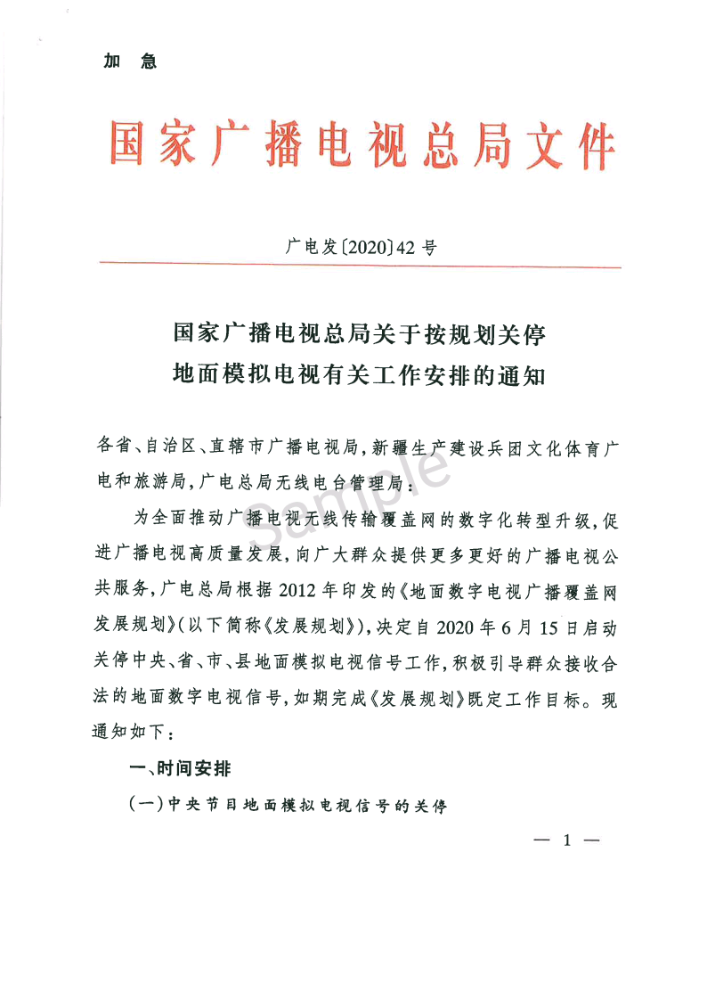
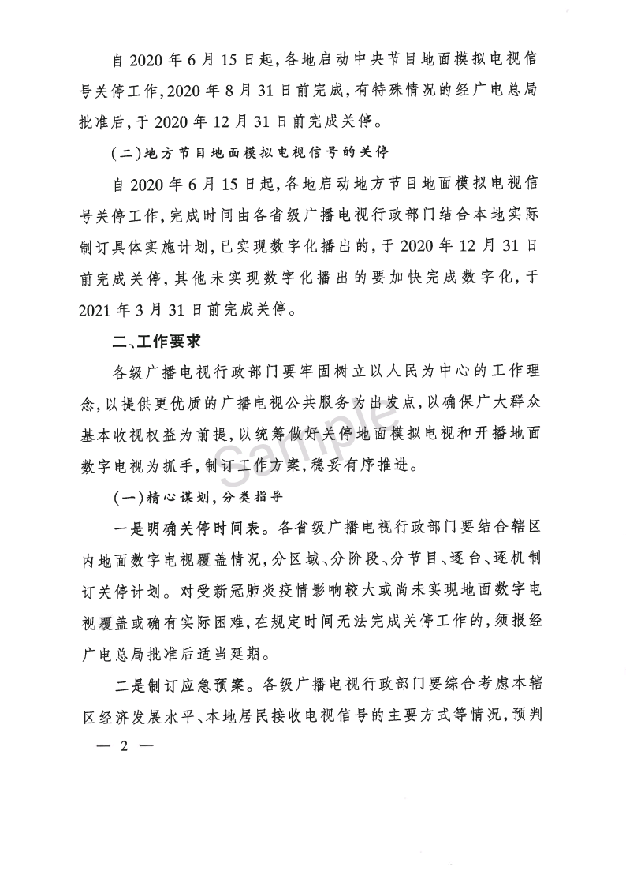
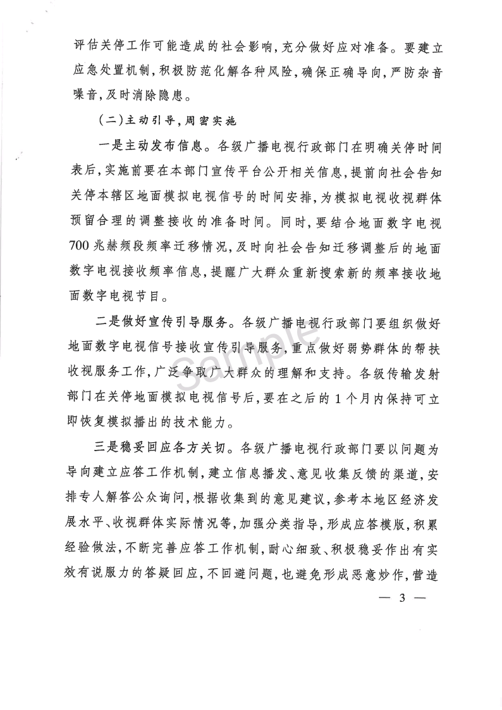
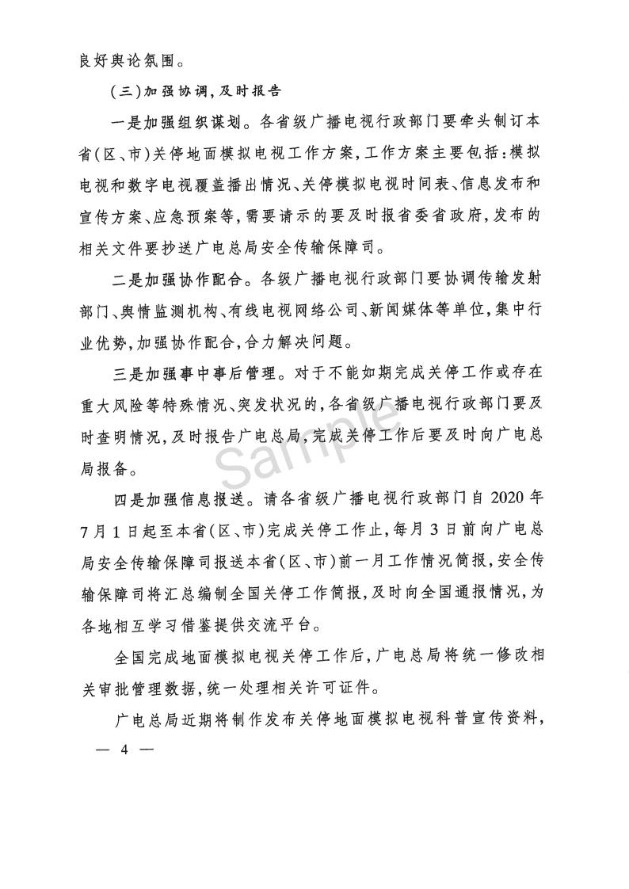
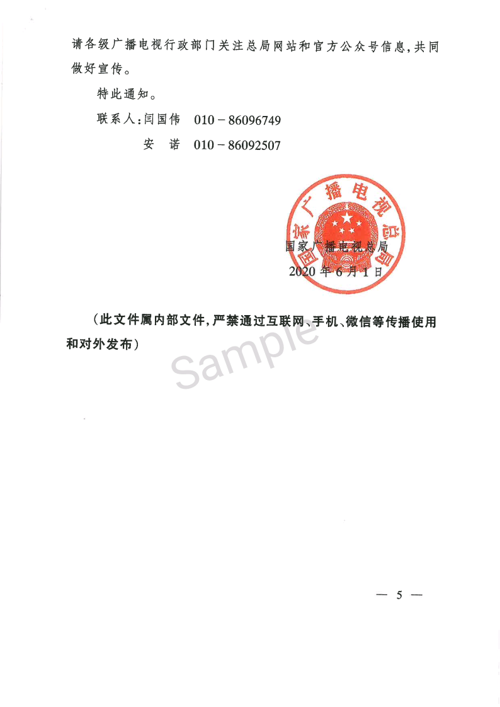
推荐ARRL的业余无线电手册
令参见《土地革命战争时期通信兵回忆录》 (中国人民解放军总参谋部通信部编研室)
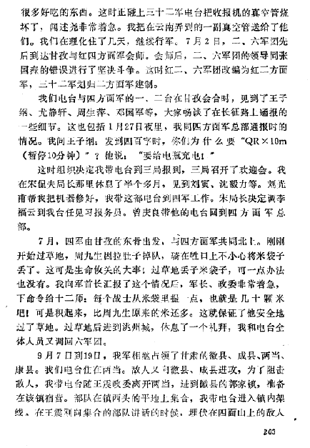
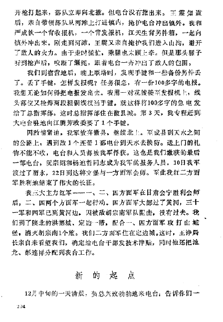

Homelite Auxiliary Generator
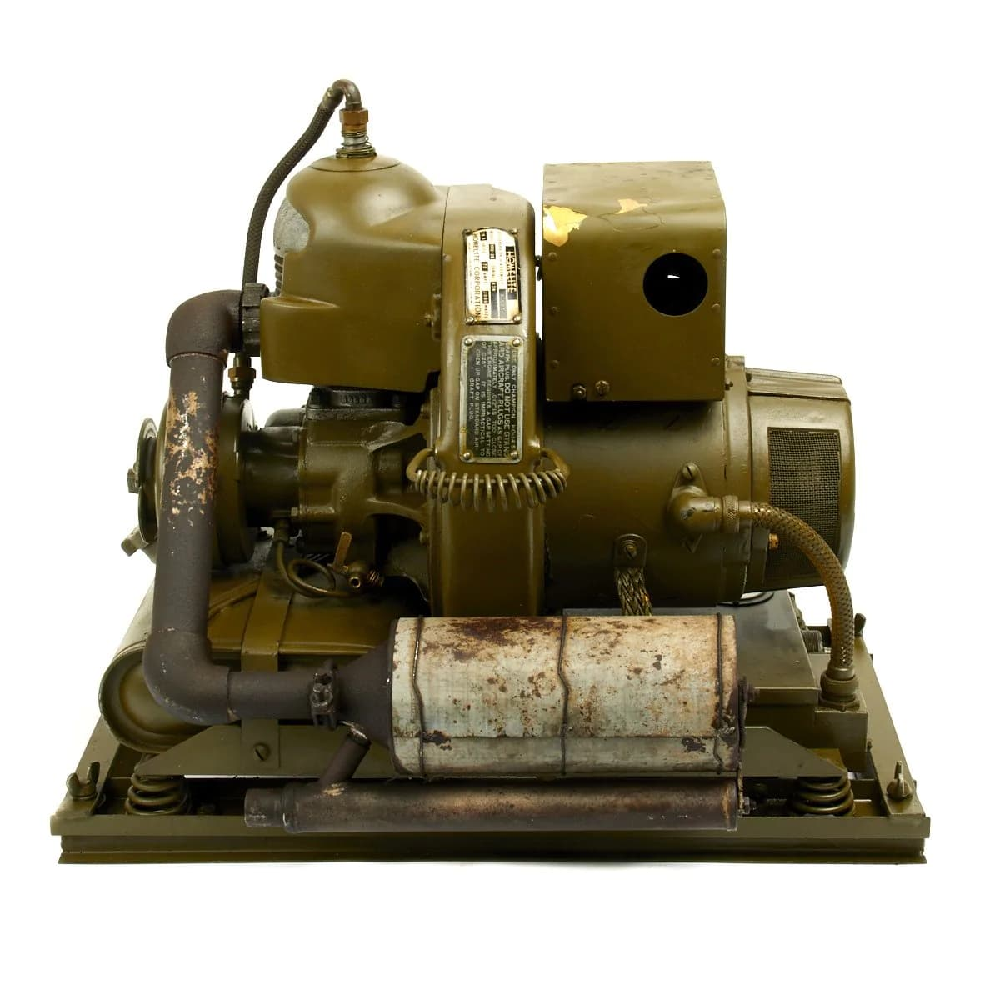
1941年，毛泽东为《通讯战士》的出版亲笔题词：“你们是科学的千里眼顺风耳”，凸显了无线电技术在抗战时期的特殊地位。毛泽东同志曾指出：“由于无线电的存在，纵使我们在农村环境中，但我们在政治上却不是孤立的，我们和全国全世界的政治活动的关系是很密切的，同时，纵使革命在各个农村是被分割的，而经过无线电，也就能形成集中的指导了。”
假负载射频（RF 假负载）用于模拟电路的工作条件，以便进行测试。
假负载射频的目的是吸收 RF 能量并转化为热量。理想的负载能在无限的频率范围内提供无限能量的匹配吸收，同时维持完美匹配。假负载最简单的测试方法是用欧姆表进行测量。
在无线电中，该设备也被称为虚拟天线。它被用作天线的替代品，帮助测试无线电发射器。
在测试放大器时，常常用假负载代替扬声器，这样就可以在不产生嘈杂噪声的情况下对放大器的极端功率水平进行测试。
假负载可以用于备用发电机的在厂测试和在役测试，用于在断电时稳定电源系统。
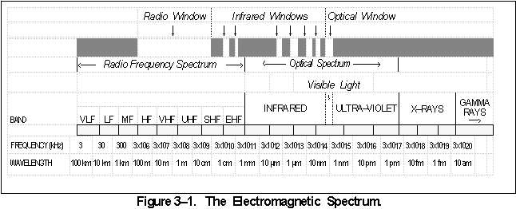
微波是频率比较高的射频。
微波的频率范围大约在 300MHz至 300GHz之间，是涵盖 UHF、SHF、EHF 范围的一种射频。所对应的波长为 1米至 1mm之间。微波频率比无线电波频率高，通常也称为“超高频电磁波”。
甚 特 超 极
Very Ultra Super Extremely
| 9 | 特高频 | UHF | 300–3000 百万赫（300MHz–3GHz） | 分米波 | 1米 – 100毫米 | 电视广播、无线电话通讯、无线网络、微波炉 |
|---|---|---|---|---|---|---|
| 10 | 超高频 | SHF | 3–30 吉赫（3GHz–30GHz） | 厘米波 | 100毫米 – 10毫米 | 无线网络、雷达、人造卫星接收 |
| 11 | 极高频 | EHF | 30–300 吉赫（30GHz–300GHz） | 毫米波 | 10毫米 – 1毫米 | 射电天文学、遥感、人体扫描安检仪 |
| 12 | 至高频 | THF | 0.3-3 兆赫（0.3THz–3THz） | 微米波 | 1毫米 – 0.1毫米 | 回旋管、人体扫描安检仪等 |
（前面提到的短波电台工作于高频（HF）频率为3-30MHz）
关键词： 速调管、行波管、磁控管、正交场放大器和回旋管
二战时候的雷达确实是用磁控管工作的，跟现在的微波炉一样，但是现代的雷达一般只有大功率的采用磁控管。
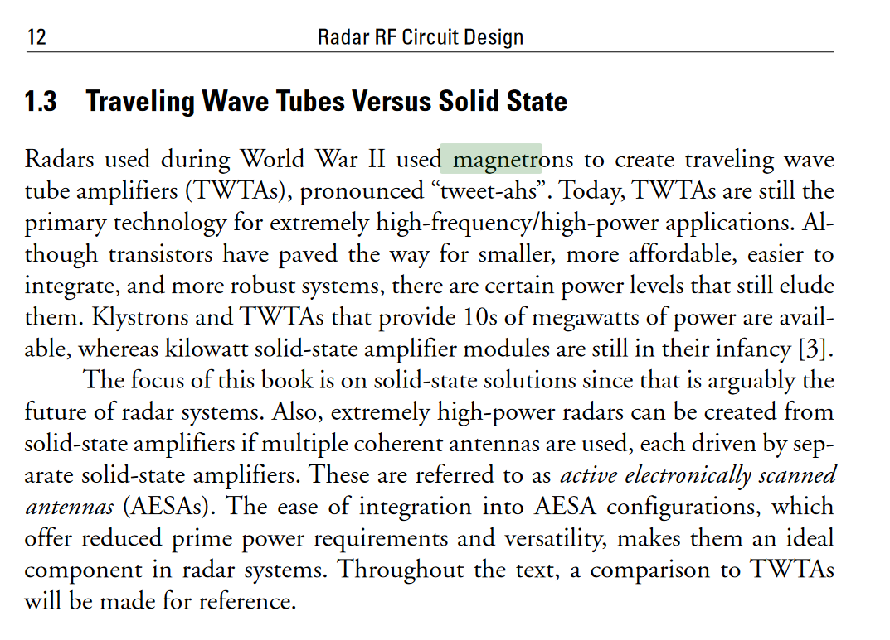
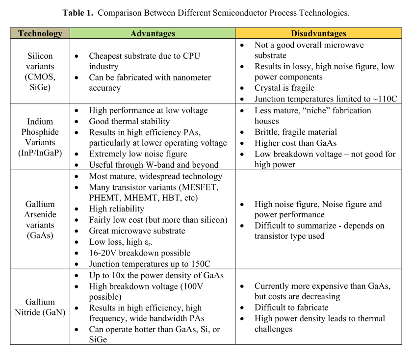
现在的雷达使用固体晶体管是主流，以后的微波炉也可能用GaN场效应管产生微波。（目前手机和笔记本电脑快充和电动自行车充电器已经用上了GaN）